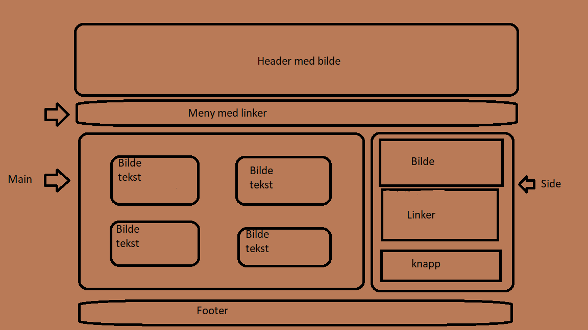

Skissen over alle skisser  Visste med en gang at jeg ville ha et brunt tema Som du kan se så har jeg fulgt skissen meget godt, og jeg kan med god samvittighet si at dette er en vellykket nettside. Den har gode kontraster rundt tekst, som gjør den lett å lese. Den har en oversiktlig meny, som ikke forvirrer leser, og den har behagelig informasjon. Jeg vil gjerne takke alle som har vært med på å få denne nettsiden til. Dette inkluderer meg selv, og bare meg selv.